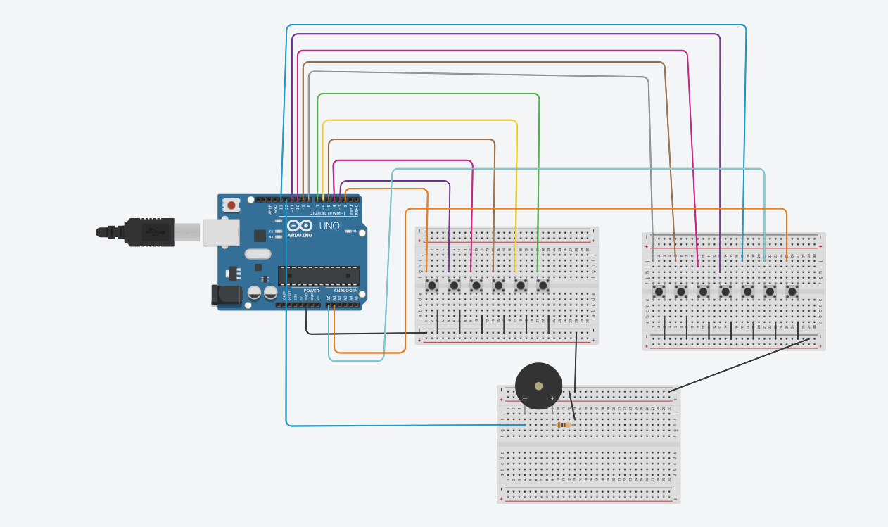
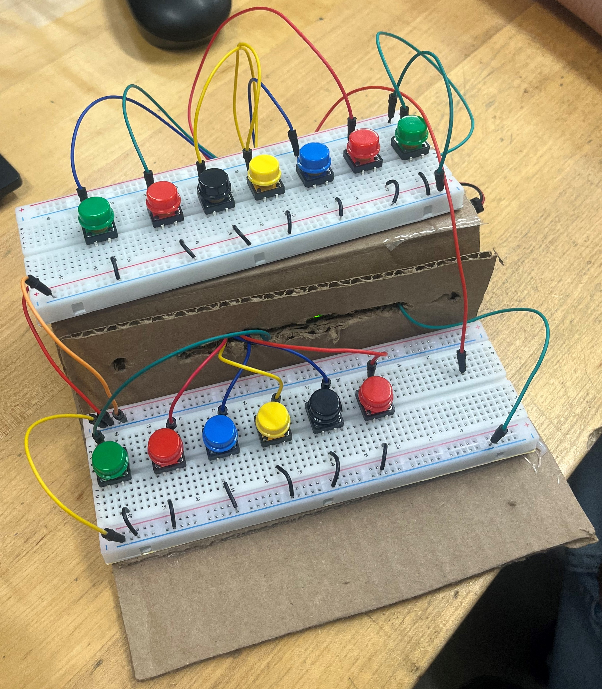

Course: TECH 117 (Computer Engineering Technology, Winter 2026)
Instructor: Ph.D. Ana Rodrigues
Team Members:
The project aims to build a simple electronic piano using an Arduino Uno board. Our project uses multiple push buttons as piano keys, a and connects them to a passive buzzer. When a key is pressed, it shall play a single piano note.
the user pushes the buttons, causing the passive buzzer to emit sound to the corrsponding note.

| Item | Qty | Unit Price | Subtotal | Source |
|---|---|---|---|---|
| Arduino Uno Rev3 | 1 | $27.60 | $27.60 | Arduino Store |
| Passive Buzzer | 1 | $0.95 | $0.95 | SparkFun |
| 220 Ω Resistors | 1 | $0.03 | $0.03 | Adafruit |
| 9-Volt battery | 1 | $4.67 | $4.67 | Walmart |
| Tactile Buttons | 13 | $0.87 | $11.31 | SparkFun |
| Breadboard | 2 | $4.95 | $9.90 | Adafruit |
| Jumper Wires | 1 set | $3.50 | $3.50 | SparkFun |
| Estimated Total | $57.96 | — | ||

// AdruinoKeyboardCircuit
// Author: Group 4 -- Elijah Palmer
// April 12, 2026
/*
* HOW TO USE
* Press a button to play a musical note. The notes get higher from left to right.
*
*/
void setup() {
// This activates a 20k ohm resistor inside the chip!
pinMode(2, INPUT_PULLUP);
pinMode(3, INPUT_PULLUP);
pinMode(4, INPUT_PULLUP);
pinMode(5, INPUT_PULLUP);
pinMode(6, INPUT_PULLUP);
pinMode(7, INPUT_PULLUP);
pinMode(8, INPUT_PULLUP);
pinMode(9, INPUT_PULLUP);
pinMode(10, INPUT_PULLUP);
pinMode(11, INPUT_PULLUP);
pinMode(13, INPUT_PULLUP);
pinMode(A0, INPUT_PULLUP);
pinMode(A1, INPUT_PULLUP);
//Buzzer:
pinMode(12, OUTPUT);
Serial.begin(9600);
}
void loop() {
// Logic is inverted: LOW means pressed, HIGH means not pressed
if (digitalRead(2) == LOW) {
Serial.println("Button 1");
tone(12, 261, 100); // C4
}
if (digitalRead(3) == LOW) {
Serial.println("Button 2");
tone(12, 293, 100); // D4
}
if (digitalRead(4) == LOW) {
Serial.println("Button 1");
tone(12, 329, 100); // E4
}
if (digitalRead(5) == LOW) {
Serial.println("Button 2");
tone(12, 361, 100); // ~F4 (slightly off, real is 349 Hz)
}
if (digitalRead(6) == LOW) {
Serial.println("Button 1");
tone(12, 393, 100); // G4
}
if (digitalRead(7) == LOW) {
Serial.println("Button 2");
tone(12, 1000, 100); // ~B5 (not standard B4/B5)
}
if (digitalRead(8) == LOW) {
Serial.println("Button 1");
tone(12, 523, 100); // C5
}
if (digitalRead(9) == LOW) {
Serial.println("Button 2");
tone(12, 587, 100); // D5
}
if (digitalRead(10) == LOW) {
Serial.println("Button 1");
tone(12, 659, 100); // E5
}
if (digitalRead(11) == LOW) {
Serial.println("Button 2");
tone(12, 698, 100); // F5
}
if (digitalRead(13) == LOW) {
Serial.println("Button 1");
tone(12, 783, 100); // G5
}
if (digitalRead(A0) == LOW) {
Serial.println("Button 2");
tone(12, 850, 100); // ~G#5/A♭5 (approx)
}
if (digitalRead(A1) == LOW) {
Serial.println("Button 1");
tone(12, 920, 100); // ~A#5/B♭5 (approx)
}
delay(100);
}
//--------------------------------